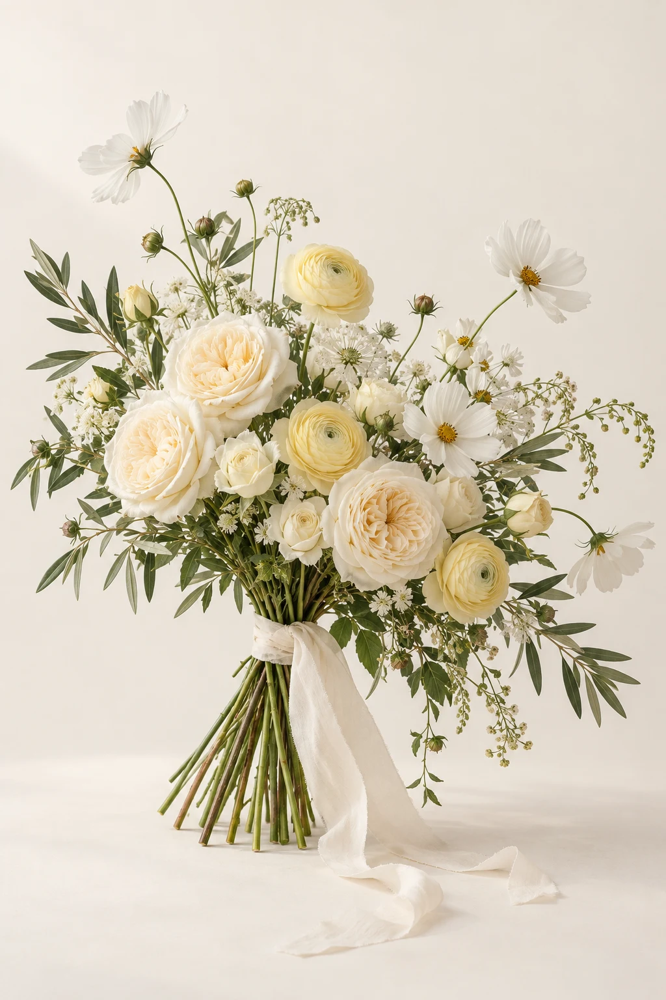
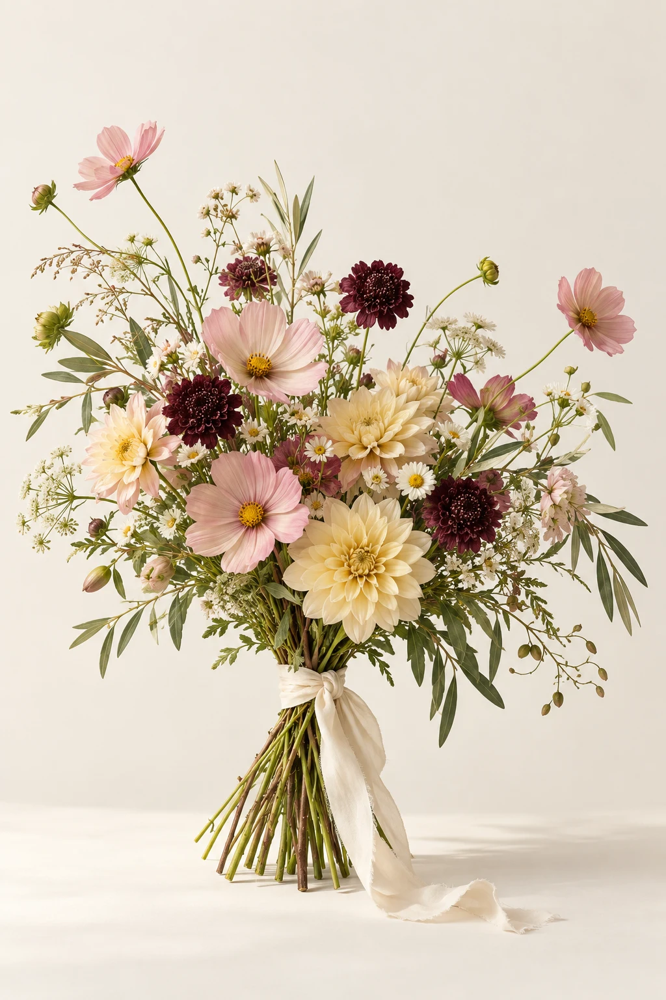

Нежно
5 900 ₽Молочный · воздушный

САДОВЫЙ · СВОБОДНЫЙ
Немного сада. Много свободы.
Как будто цветы только что принесли из сада: разные высоты, живые линии и неожиданные сочетания.
6 500 ₽ пример цены
Рассмотреть букетКосмея, скабиоза, георгин, мелкие полевые цветы и сезонная зелень.
Асимметричная сборка, пудровые, сливочные и бордовые оттенки.
Эскиз букета для портфолио. Состав и цена условные. Заказы не принимаются.
Поставь букет в чистую вазу, убери листья ниже уровня воды и обнови срезы. Меняй воду ежедневно, держи цветы подальше от батареи, прямого солнца и фруктов.